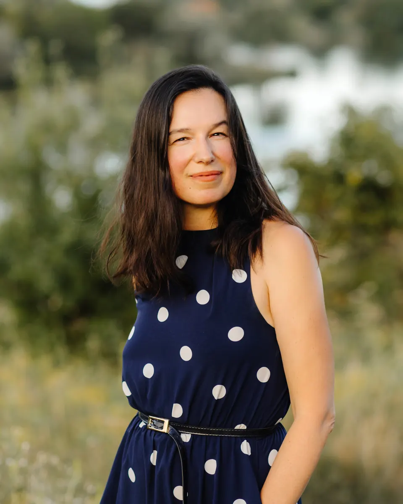
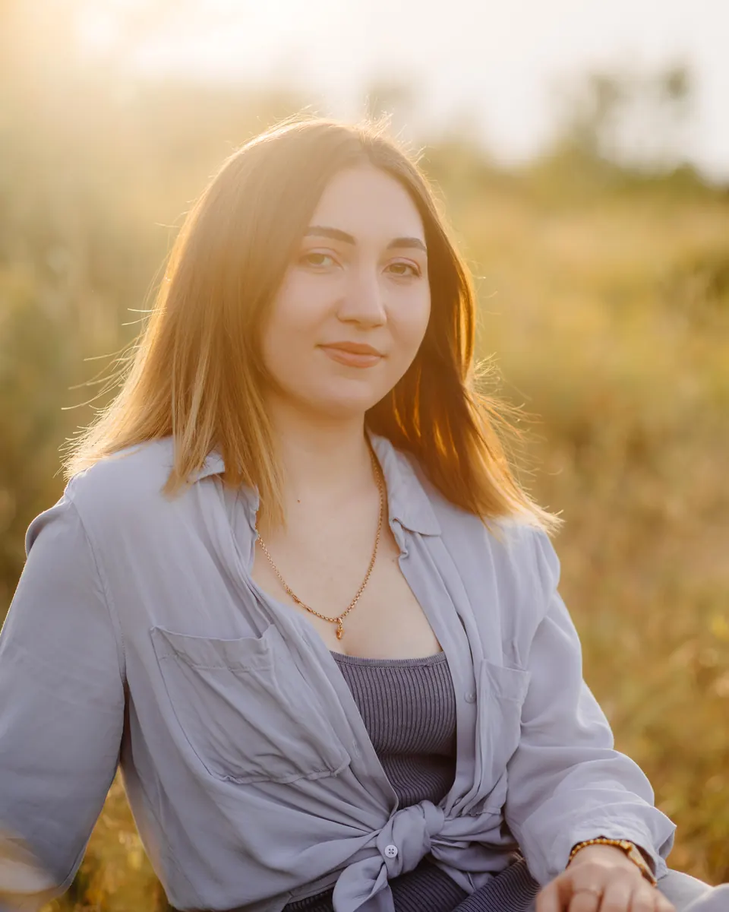

Головний бухгалтер
Євгенія Мазепа
Облік і звітність: податкова, статистична, звіти до фондів. Вела одночасно ТОВ на загальній системі, ТОВ на єдиному податку і ФОП.
Команда Happy Finance
За вашим обліком стоїть не одна людина, а команда. У кожної своя ділянка: первинні документи, закупівлі, зарплата, звітність і фінанси.

Засновниця
Фінансова експертка · кризова менеджерка
«Для мене фінанси — це не просто звіти, податки й цифри. Це інструмент, який допомагає власнику розуміти реальний стан підприємства й ухвалювати обґрунтовані рішення.»
Мій шлях у бізнесі почався з бухгалтерського обліку й привів до фінансового та операційного управління, керівництва підприємствами й антикризового менеджменту. Я працювала з ресторанами, виробництвом, дистрибуцією, роздрібною торгівлею й консалтингом.
Моя мета — допомагати власникам бачити за цифрами можливості й перетворювати хаос на зрозумілу систему.
Команда
Натисніть «Більше», щоб перевернути картку: там досвід і те, чим кожна живе поза роботою.

Головний бухгалтер
Облік і звітність: податкова, статистична, звіти до фондів. Вела одночасно ТОВ на загальній системі, ТОВ на єдиному податку і ФОП.

Бухгалтер з первинних документів і ПРРО
Первинні документи і ПРРО: щоб кожна операція мала правильний документ ще до звітності.
Бухгалтер із заробітної плати
Зарплата і все, що з нею повʼязано. У бухгалтерії з 2003 року: від касира до головного бухгалтера.
Менеджер із закупівель, бухгалтер з первинних документів
Закупівлі та первинка: постачальники, звірки, документообіг. Колись керувала відділом обліку первинних документів.
Як ділимо роботу
Кожен документ проходить кілька рук, і на кожному кроці є людина, яка за нього відповідає.
01 · Первинні документи і ПРРО
Збираємо й перевіряємо рахунки, накладні, акти та касові операції, щоб нічого не загубилося.
02 · Закупівлі та звірки
Розрахунки з постачальниками й покупцями, акти звірки, документообіг.
03 · Зарплата
Нарахування зарплати працівникам і звітність, повʼязана з нею.
04 · Облік і звітність
Ведемо облік, готуємо податкову, статистичну звітність і звіти до фондів.
05 · Фінанси
Управлінський облік і розбір цифр із власником: що відбувається з бізнесом і що з цим робити.
Познайомимося?
Напишіть Марії: розкажете про свій бізнес, і ми підкажемо, з чого почати. Вартість після консультації.
Демо блоку 09. На сайті сторінка team.html має шапку й підвал.